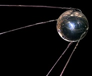
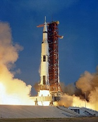

History
Telescope
The first telescope was said to be invented in 1608 in the Netherlands by an eyeglass maker named Hans Lippershey. The Orbiting Astronomical Observatory 2 was the first space telescope launched on December 7, 1968. As of February 2, 2019, there was 3,891 confirmed exoplanets discovered.
First outer space flights
In 1949, the Bumper-WAC reached an altitude of 393 kilometers, becoming the first human-made object to enter space, according to NASA, although V-2 Rocket MW 18014 crossed the Kármán line earlier, in 1944.
 The first successful orbital launch was of the Soviet uncrewed Sputnik 1 ("Satellite 1") mission on 4 October 1957. The satellite weighed
about 83 kg (183 lb), and is believed to have orbited Earth at a height of about 250 km (160 mi). It had two radio transmitters (20 and 40 MHz), which emitted "beeps" that could be heard by radios around the globe. Analysis of
the radio signals was used to gather information about the electron density of the ionosphere, while temperature and pressure data was encoded in the duration of radio beeps. The results indicated that the satellite was not punctured
by a meteoroid. Sputnik 1 was launched by an R-7 rocket. It burned up upon re-entry on 3 January 1958. 1 was launched by an R-7 rocket. It burned up upon re-entry on 3 January 1958.
First astronomical space explorations
The first crewed landing on another celestial body was performed by Apollo 11 on July 20, 1969, landing on the Moon.
 There have been a total of six spacecraft with humans landing on the Moon starting from 1969 to the last human landing in 1972.
The
first interplanetary flyby was the 1961 Venera 1 flyby of Venus, though the 1962 Mariner 2 was the first flyby of Venus to return data (closest approach 34,773 kilometers). Pioneer 6 was the first satellite to orbit the Sun, launched
on December 16, 1965. The other planets were first flown by in 1965 for Mars by Mariner 4, 1973 for Jupiter by Pioneer 10, 1974 for Mercury by Mariner 10, 1979 for Saturn by Pioneer 11, 1986 for Uranus by Voyager 2, 1989 for Neptune
by Voyager 2. In 2015, the dwarf planets Ceres and Pluto were orbited by Dawn and passed by New Horizons, respectively. This accounts for flybys of each of the eight planets in our Solar System, the Sun, the Moon and Ceres & Pluto
(2 of the 5 recognized dwarf planets).
The first interplanetary surface mission to return at least limited surface data from another planet was the 1970 landing of Venera 7 which returned data to Earth for 23 minutes from
Venus. In 1975 the Venera 9 was the first to return images from the surface of another planet, returning images from Venus.
In 1971 the Mars 3 mission achieved the first soft landing on Mars returning data for almost 20 seconds.
Later much longer duration surface missions were achieved, including over six years of Mars surface operation by Viking 1 from 1975 to 1982 and over two hours of transmission from the surface of Venus by Venera 13 in 1982, the
longest ever Soviet planetary surface mission.
Venus and Mars are the two planets outside of Earth humans have conducted surface missions on with unmanned robotic spacecraft.
Timeline of space travel by nationality
| # | Country | Name | Date |
|---|---|---|---|
| 1 | Soviet Union | Yuri Gagarin | 12 April 1961 |
| 2 | United States | Alan Shepard | 5 May 1961 |
| 3 | Czechoslovakia | Vladimír Remek | 2 March 1978 |
| 4 | Poland | Mirosław Hermaszewski | 27 June 1978 |
| 5 | East Germany | Sigmund Jähn | 26 August 1978 |
| 6 | Bulgaria | Georgi Ivanov | 10 April 1979 |